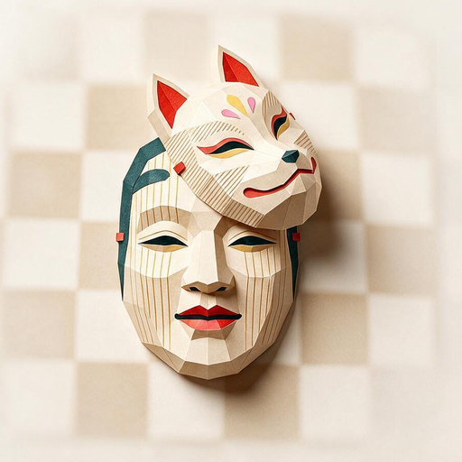
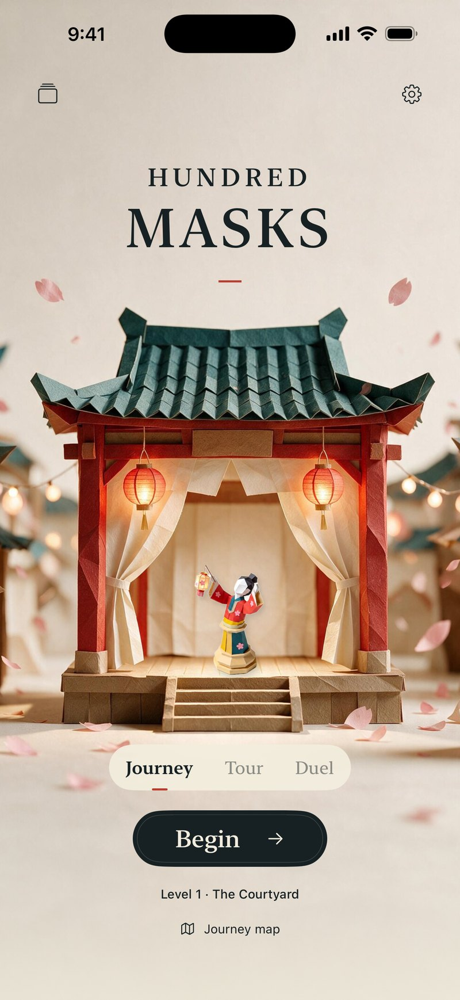
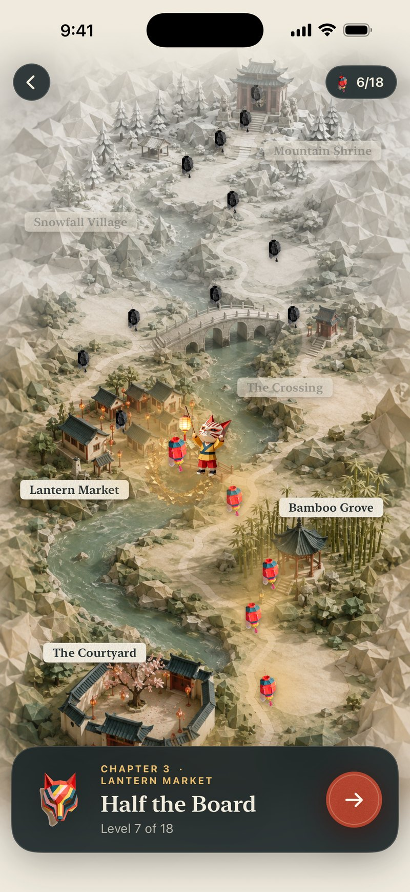
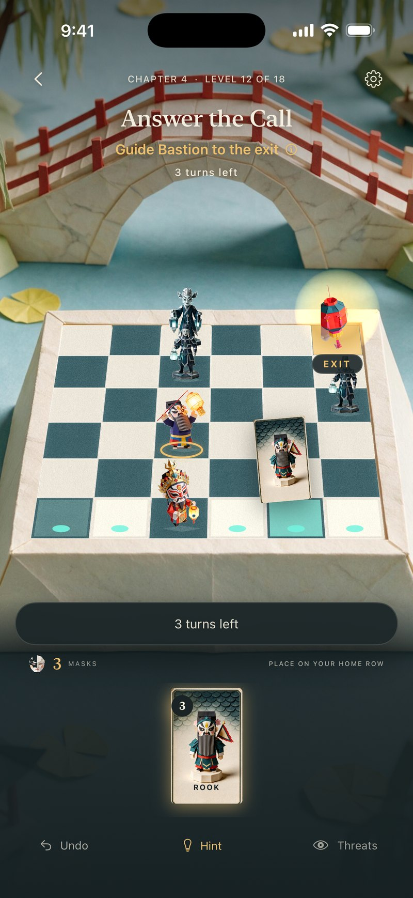
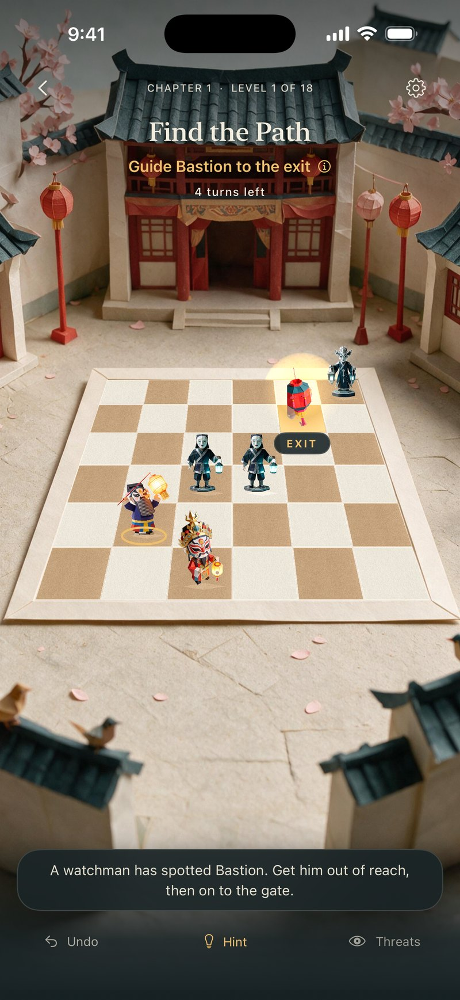
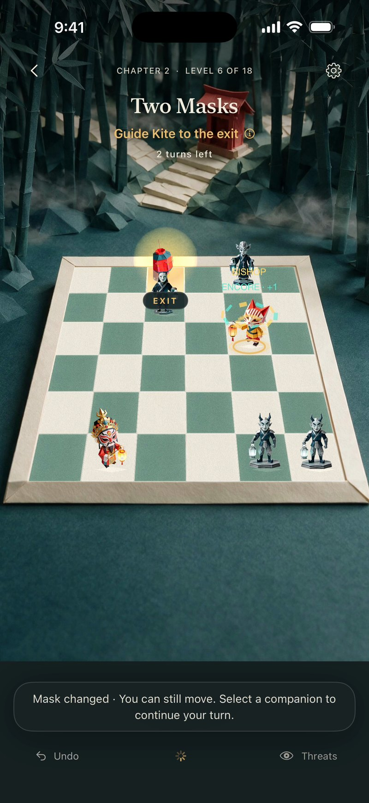

Bring your troupe together
Move a companion onto a matching one to change their mask. Your first merge each turn earns a mask and lets you move again. Two Pawns become a Knight; keep combining to find a new way through the stage.

HundredMasksA paper-theatre strategy game · iPhone
A little world of clever moves. Lead a troupe of paper characters through courtyards, bamboo groves, lantern markets and snowy villages — chess moves, merging masks and reserve cards, all on one compact board.
Coming to the App Store for iPhone (iOS 18 or later). The download link will appear here at launch.

How it plays
Move a companion onto a matching one to change their mask. Your first merge each turn earns a mask and lets you move again. Two Pawns become a Knight; keep combining to find a new way through the stage.
Call in a companion from your cards, then make your move. Captures and merges earn masks, and fresh supplies arrive every two turns. Reach the far edge with a Pawn to choose its next role.
Keep a companion on a lantern through the rival’s reply to earn a light. First to three wins. You can also trap the rival King — and every move can be undone, a whole turn at a time.
The Journey
Eighteen hand-built levels on a single river map, each with a proven perfect route — from the first courtyard to the mountain shrine.
Each level sets one clear goal: guide a marked companion to the exit, cross a courtyard while the watchman passes, hold the lantern lights. Your place on the road is always marked, finished levels can be replayed, and the game saves after every action.
Meet six characters along the way — WickKiteSableBastionEmberThe Keeper — each with their own voice, their own way of moving, and memories to unlock.

Three ways to play
The story. Six chapters of three puzzles each, with a companion to guide and a memory to unlock in each one.
Five battles, three roads, three starting companions and four campfire gifts. Finish a tour to earn its seal.
One stage, your troupe and a race for three lights against a rival that never rolls dice.
On the stage
The board sits inside the scene — a courtyard, a bamboo grove, a lantern market. Tap a companion to see where it can go, tap the threat control to see what the rival is aiming at, and drag a card onto your home row to summon help.
Stuck? Hints explain the goal before they show a move, and they can be switched off in Settings.

What you get

Screens
